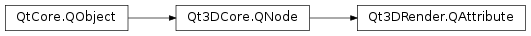

Qt3DRender.QAttribute¶
Synopsis¶
Functions¶
- def
attributeType() - def
buffer() - def
byteOffset() - def
byteStride() - def
count() - def
divisor() - def
name() - def
vertexBaseType() - def
vertexSize()
Slots¶
- def
setAttributeType(attributeType) - def
setBuffer(buffer) - def
setByteOffset(byteOffset) - def
setByteStride(byteStride) - def
setCount(count) - def
setDataSize(size) - def
setDataType(type) - def
setDivisor(divisor) - def
setName(name) - def
setVertexBaseType(type) - def
setVertexSize(size)
Signals¶
- def
attributeTypeChanged(attributeType) - def
bufferChanged(buffer) - def
byteOffsetChanged(byteOffset) - def
byteStrideChanged(byteStride) - def
countChanged(count) - def
dataSizeChanged(vertexSize) - def
dataTypeChanged(vertexBaseType) - def
divisorChanged(divisor) - def
nameChanged(name) - def
vertexBaseTypeChanged(vertexBaseType) - def
vertexSizeChanged(vertexSize)
Static functions¶
- def
defaultColorAttributeName() - def
defaultJointIndicesAttributeName() - def
defaultJointWeightsAttributeName() - def
defaultNormalAttributeName() - def
defaultPositionAttributeName() - def
defaultTangentAttributeName() - def
defaultTextureCoordinate1AttributeName() - def
defaultTextureCoordinate2AttributeName() - def
defaultTextureCoordinateAttributeName()
Detailed Description¶
Defines an attribute and how data should be read from a
PySide2.QtCore.QBuffer.There are 3 types of attributes.
VertexAttribute: used to define data to be read on a per vertex basisIndexAttribute: used to define vertex indices when indexed draw calls are to be usedDrawIndirectAttribute: used to specify the DrawIndirect buffer to be used when indirect draw calls are to be usedNote
when an attribute is of type
DrawIndirectAttribute, only count, stride and offset are relevant.When providing your own attributes, it may make sense to name your attribute using helpers such as
QAttribute.defaultPositionAttributeName()as that will ensure your geometry will be compatible with picking and the various materials provided in the Qt3DExtras module.See also
-
class
PySide2.Qt3DRender.Qt3DRender.QAttribute([parent=nullptr])¶ -
class
PySide2.Qt3DRender.Qt3DRender.QAttribute(buf, vertexBaseType, vertexSize, count[, offset=0[, stride=0[, parent=nullptr]]]) -
class
PySide2.Qt3DRender.Qt3DRender.QAttribute(buf, name, vertexBaseType, vertexSize, count[, offset=0[, stride=0[, parent=nullptr]]]) Parameters: - buf –
PySide2.Qt3DRender.Qt3DRender::QBuffer - count –
PySide2.QtCore.uint - vertexSize –
PySide2.QtCore.uint - offset –
PySide2.QtCore.uint - name – unicode
- stride –
PySide2.QtCore.uint - vertexBaseType –
PySide2.Qt3DRender.Qt3DRender::QAttribute.VertexBaseType - parent –
PySide2.Qt3DCore.Qt3DCore::QNode
Constructs a new
QAttributewithparent.Constructs a new
QAttributefrombufoftype,dataSize,count,offset, andstridewithparent.Constructs a new
QAttributenamednamefrombufoftype,dataSize,count,offset, andstridewithparent.- buf –
-
PySide2.Qt3DRender.Qt3DRender.QAttribute.AttributeType¶ The type of the attribute.
Constant Description Qt3DRender.QAttribute.VertexAttribute Qt3DRender.QAttribute.IndexAttribute Qt3DRender.QAttribute.DrawIndirectAttribute
-
PySide2.Qt3DRender.Qt3DRender.QAttribute.VertexBaseType¶ The type of the data.
Constant Description Qt3DRender.QAttribute.Byte Qt3DRender.QAttribute.UnsignedByte Qt3DRender.QAttribute.Short Qt3DRender.QAttribute.UnsignedShort Qt3DRender.QAttribute.Int Qt3DRender.QAttribute.UnsignedInt Qt3DRender.QAttribute.HalfFloat Qt3DRender.QAttribute.Float Qt3DRender.QAttribute.Double
-
PySide2.Qt3DRender.Qt3DRender.QAttribute.attributeType()¶ Return type: PySide2.Qt3DRender.Qt3DRender::QAttribute.AttributeTypeSee also
PySide2.Qt3DRender.Qt3DRender::QAttribute.setAttributeType()
-
PySide2.Qt3DRender.Qt3DRender.QAttribute.attributeTypeChanged(attributeType)¶ Parameters: attributeType – PySide2.Qt3DRender.Qt3DRender::QAttribute.AttributeType
-
PySide2.Qt3DRender.Qt3DRender.QAttribute.buffer()¶ Return type: PySide2.Qt3DRender.Qt3DRender::QBufferSee also
PySide2.Qt3DRender.Qt3DRender::QAttribute.setBuffer()
-
PySide2.Qt3DRender.Qt3DRender.QAttribute.bufferChanged(buffer)¶ Parameters: buffer – PySide2.Qt3DRender.Qt3DRender::QBuffer
-
PySide2.Qt3DRender.Qt3DRender.QAttribute.byteOffset()¶ Return type: PySide2.QtCore.uintSee also
PySide2.Qt3DRender.Qt3DRender::QAttribute.setByteOffset()
-
PySide2.Qt3DRender.Qt3DRender.QAttribute.byteOffsetChanged(byteOffset)¶ Parameters: byteOffset – PySide2.QtCore.uint
-
PySide2.Qt3DRender.Qt3DRender.QAttribute.byteStride()¶ Return type: PySide2.QtCore.uintSee also
PySide2.Qt3DRender.Qt3DRender::QAttribute.setByteStride()
-
PySide2.Qt3DRender.Qt3DRender.QAttribute.byteStrideChanged(byteStride)¶ Parameters: byteStride – PySide2.QtCore.uint
-
PySide2.Qt3DRender.Qt3DRender.QAttribute.count()¶ Return type: PySide2.QtCore.uintSee also
PySide2.Qt3DRender.Qt3DRender::QAttribute.setCount()
-
PySide2.Qt3DRender.Qt3DRender.QAttribute.countChanged(count)¶ Parameters: count – PySide2.QtCore.uint
-
PySide2.Qt3DRender.Qt3DRender.QAttribute.dataSizeChanged(vertexSize)¶ Parameters: vertexSize – PySide2.QtCore.uint
-
PySide2.Qt3DRender.Qt3DRender.QAttribute.dataTypeChanged(vertexBaseType)¶ Parameters: vertexBaseType – PySide2.Qt3DRender.Qt3DRender::QAttribute.VertexBaseType
-
static
PySide2.Qt3DRender.Qt3DRender.QAttribute.defaultColorAttributeName()¶ Return type: unicode QAttribute.defaultColorAttributeNameReturns the name of the default color attribute
-
static
PySide2.Qt3DRender.Qt3DRender.QAttribute.defaultJointIndicesAttributeName()¶ Return type: unicode QAttribute.defaultJointIndicesAttributeNameReturns the name of the default joint indices attribute
-
static
PySide2.Qt3DRender.Qt3DRender.QAttribute.defaultJointWeightsAttributeName()¶ Return type: unicode QAttribute.defaultJointIndicesAttributeNameReturns the name of the default joint weights attribute
-
static
PySide2.Qt3DRender.Qt3DRender.QAttribute.defaultNormalAttributeName()¶ Return type: unicode QAttribute.defaultNormalAttributeNameReturns the name of the default normal attribute
-
static
PySide2.Qt3DRender.Qt3DRender.QAttribute.defaultPositionAttributeName()¶ Return type: unicode QAttribute.defaultPositionAttributeNameReturns the name of the default position attribute
-
static
PySide2.Qt3DRender.Qt3DRender.QAttribute.defaultTangentAttributeName()¶ Return type: unicode QAttribute.defaultTangentAttributeNameReturns the name of the default tangent attribute
-
static
PySide2.Qt3DRender.Qt3DRender.QAttribute.defaultTextureCoordinate1AttributeName()¶ Return type: unicode QAttribute.defaultTextureCoordinate1AttributeNameReturns the name of the default attribute for the second layer of texture coordinates
-
static
PySide2.Qt3DRender.Qt3DRender.QAttribute.defaultTextureCoordinate2AttributeName()¶ Return type: unicode QAttribute.defaultTextureCoordinate2AttributeNameReturns the name of the default attribute for the third layer of texture coordinates
-
static
PySide2.Qt3DRender.Qt3DRender.QAttribute.defaultTextureCoordinateAttributeName()¶ Return type: unicode QAttribute.defaultTextureCoordinateAttributeNameReturns the name of the default texture coordinate attribute
-
PySide2.Qt3DRender.Qt3DRender.QAttribute.divisor()¶ Return type: PySide2.QtCore.uintSee also
PySide2.Qt3DRender.Qt3DRender::QAttribute.setDivisor()
-
PySide2.Qt3DRender.Qt3DRender.QAttribute.divisorChanged(divisor)¶ Parameters: divisor – PySide2.QtCore.uint
-
PySide2.Qt3DRender.Qt3DRender.QAttribute.name()¶ Return type: unicode See also
PySide2.Qt3DRender.Qt3DRender::QAttribute.setName()
-
PySide2.Qt3DRender.Qt3DRender.QAttribute.nameChanged(name)¶ Parameters: name – unicode
-
PySide2.Qt3DRender.Qt3DRender.QAttribute.setAttributeType(attributeType)¶ Parameters: attributeType – PySide2.Qt3DRender.Qt3DRender::QAttribute.AttributeTypeSee also
PySide2.Qt3DRender.Qt3DRender::QAttribute.attributeType()
-
PySide2.Qt3DRender.Qt3DRender.QAttribute.setBuffer(buffer)¶ Parameters: buffer – PySide2.Qt3DRender.Qt3DRender::QBufferSee also
PySide2.Qt3DRender.Qt3DRender::QAttribute.buffer()
-
PySide2.Qt3DRender.Qt3DRender.QAttribute.setByteOffset(byteOffset)¶ Parameters: byteOffset – PySide2.QtCore.uintSee also
PySide2.Qt3DRender.Qt3DRender::QAttribute.byteOffset()
-
PySide2.Qt3DRender.Qt3DRender.QAttribute.setByteStride(byteStride)¶ Parameters: byteStride – PySide2.QtCore.uintSee also
PySide2.Qt3DRender.Qt3DRender::QAttribute.byteStride()
-
PySide2.Qt3DRender.Qt3DRender.QAttribute.setCount(count)¶ Parameters: count – PySide2.QtCore.uintSee also
PySide2.Qt3DRender.Qt3DRender::QAttribute.count()
-
PySide2.Qt3DRender.Qt3DRender.QAttribute.setDataSize(size)¶ Parameters: size – PySide2.QtCore.uint
-
PySide2.Qt3DRender.Qt3DRender.QAttribute.setDataType(type)¶ Parameters: type – PySide2.Qt3DRender.Qt3DRender::QAttribute.VertexBaseType
-
PySide2.Qt3DRender.Qt3DRender.QAttribute.setDivisor(divisor)¶ Parameters: divisor – PySide2.QtCore.uintSee also
PySide2.Qt3DRender.Qt3DRender::QAttribute.divisor()
-
PySide2.Qt3DRender.Qt3DRender.QAttribute.setName(name)¶ Parameters: name – unicode See also
PySide2.Qt3DRender.Qt3DRender::QAttribute.name()
-
PySide2.Qt3DRender.Qt3DRender.QAttribute.setVertexBaseType(type)¶ Parameters: type – PySide2.Qt3DRender.Qt3DRender::QAttribute.VertexBaseTypeSee also
PySide2.Qt3DRender.Qt3DRender::QAttribute.vertexBaseType()
-
PySide2.Qt3DRender.Qt3DRender.QAttribute.setVertexSize(size)¶ Parameters: size – PySide2.QtCore.uintSee also
PySide2.Qt3DRender.Qt3DRender::QAttribute.vertexSize()
-
PySide2.Qt3DRender.Qt3DRender.QAttribute.vertexBaseType()¶ Return type: PySide2.Qt3DRender.Qt3DRender::QAttribute.VertexBaseTypeSee also
PySide2.Qt3DRender.Qt3DRender::QAttribute.setVertexBaseType()
-
PySide2.Qt3DRender.Qt3DRender.QAttribute.vertexBaseTypeChanged(vertexBaseType)¶ Parameters: vertexBaseType – PySide2.Qt3DRender.Qt3DRender::QAttribute.VertexBaseType
-
PySide2.Qt3DRender.Qt3DRender.QAttribute.vertexSize()¶ Return type: PySide2.QtCore.uintSee also
PySide2.Qt3DRender.Qt3DRender::QAttribute.setVertexSize()
-
PySide2.Qt3DRender.Qt3DRender.QAttribute.vertexSizeChanged(vertexSize)¶ Parameters: vertexSize – PySide2.QtCore.uint
© 2018 The Qt Company Ltd. Documentation contributions included herein are the copyrights of their respective owners. The documentation provided herein is licensed under the terms of the GNU Free Documentation License version 1.3 as published by the Free Software Foundation. Qt and respective logos are trademarks of The Qt Company Ltd. in Finland and/or other countries worldwide. All other trademarks are property of their respective owners.